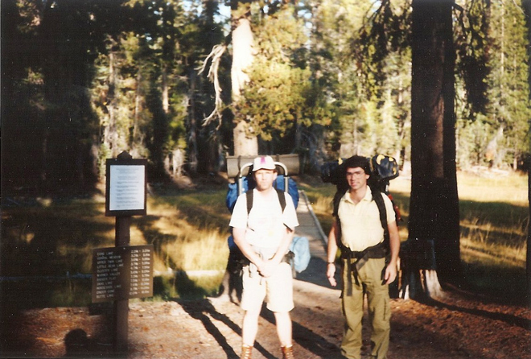
Lassen Peak (commonly called Mount Lassen) is the southernmost active volcano in the Cascade Range of the Western United States. Located in the Shasta Cascade region of Northern California, it is part of the Cascade Volcanic Arc, which stretches from southwestern British Columbia to northern California. It reaches an elevation of 10,457 feet (3,187 m), standing above the northern Sacramento Valley.
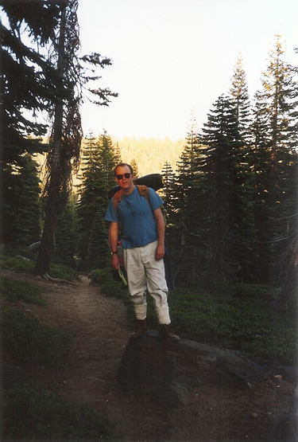
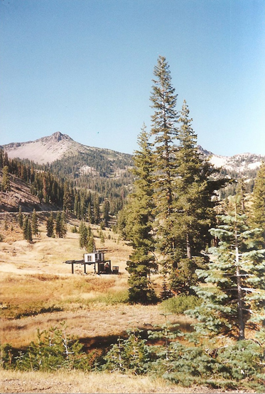
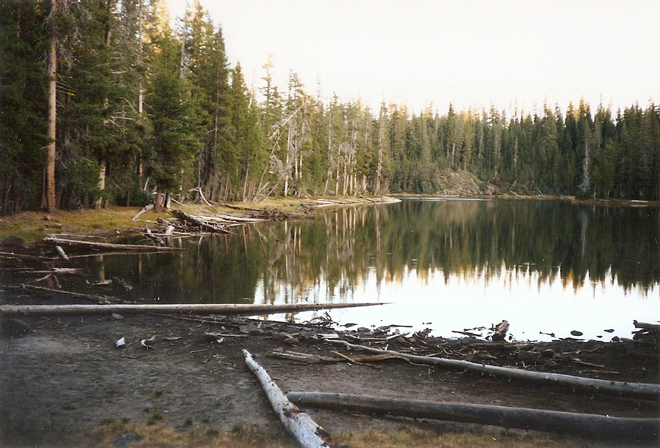
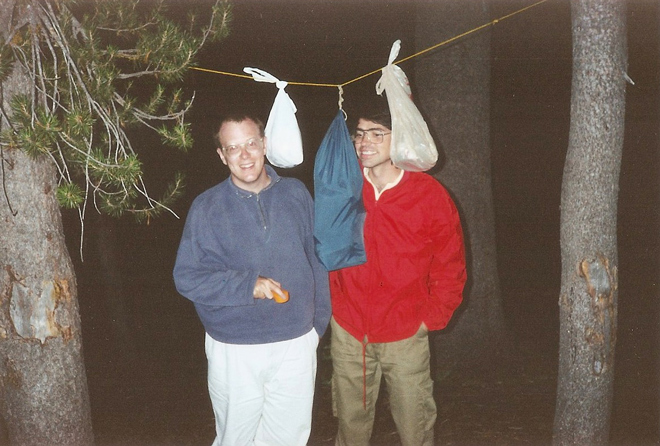
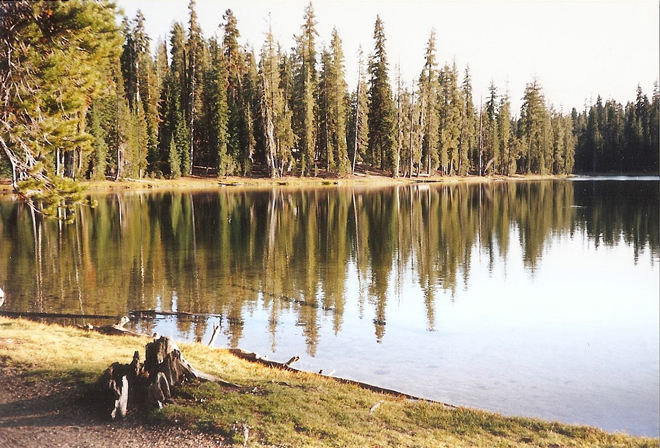
On 22 May 1915, a powerful explosive eruption at Lassen Peak devastated nearby areas, and spread volcanic ash as far as 280 miles (450 km) to the east. This explosion was the most powerful in a series of eruptions from 1914 through 1917. Lassen Peak and Mount St. Helens were the only two volcanoes in the contiguous United States to erupt during the 20th century.
TThe photo below shows the "Great Explosion" eruption column of 22 May 1915 which was seen as far as 150 miles (240 km) away. In the foreground is the Loomis Hot Rock, one of the many large boulders dislodged in the eruption that were too hot to touch for days after.
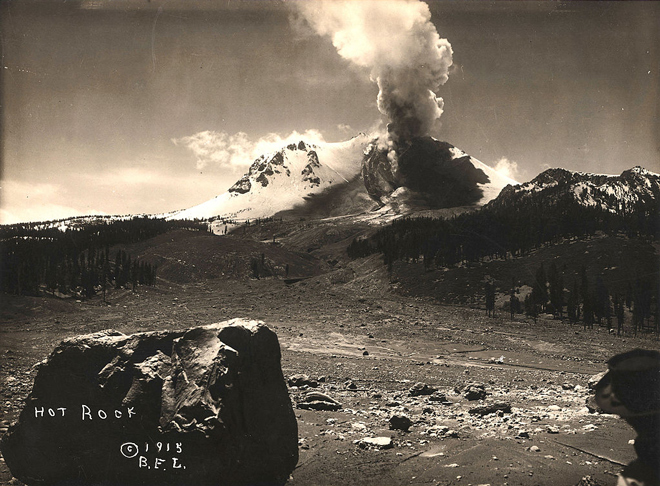
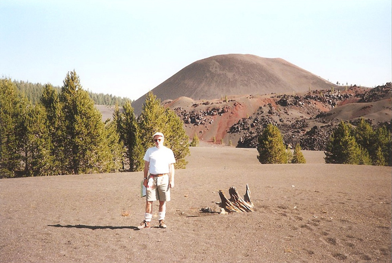
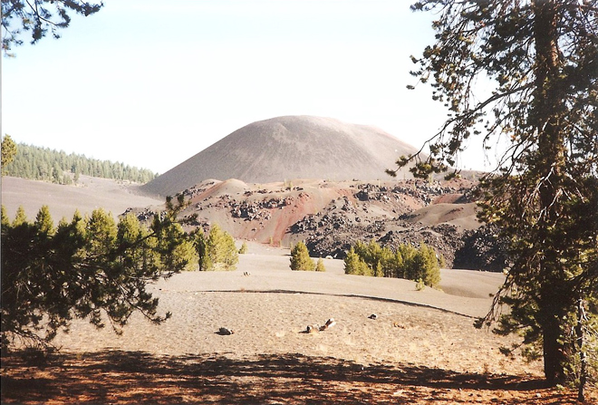
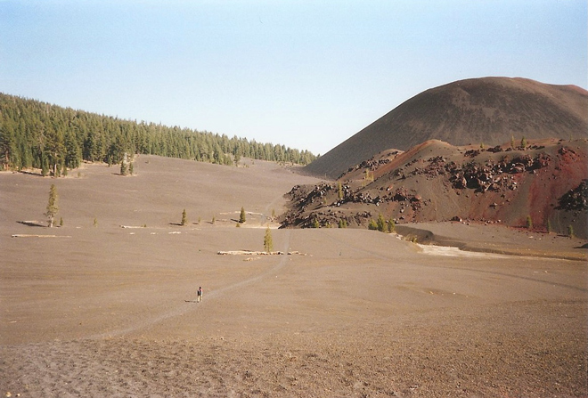
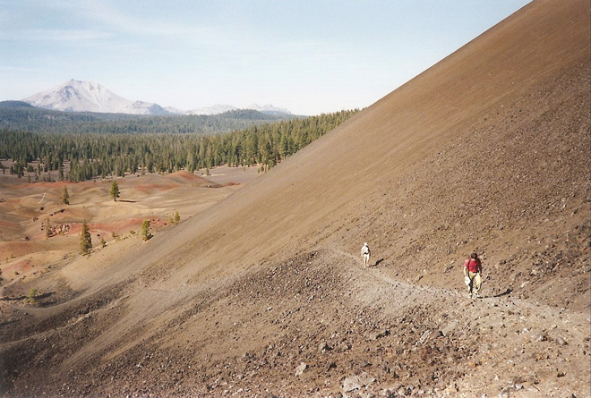
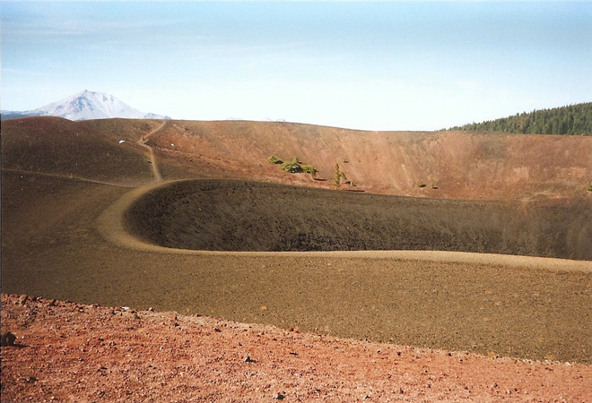
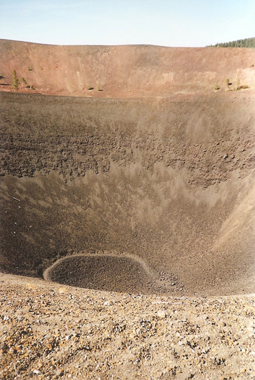
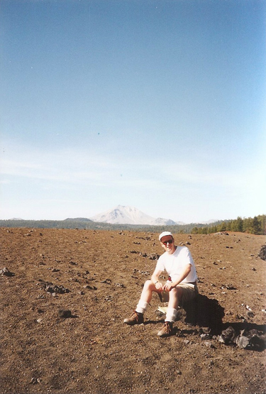
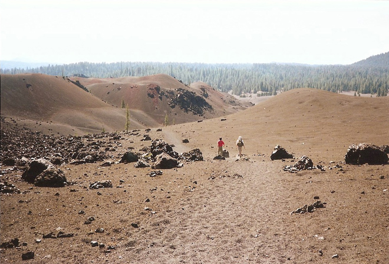
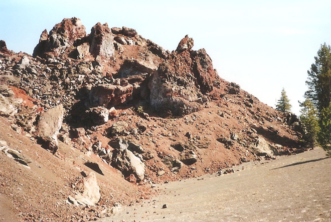
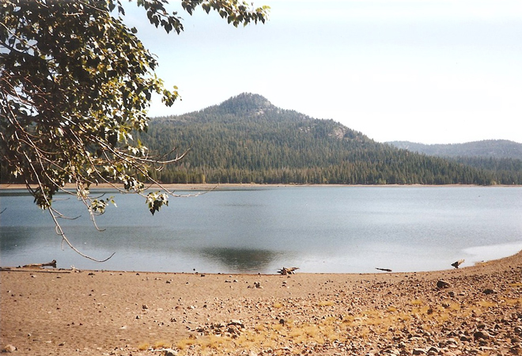